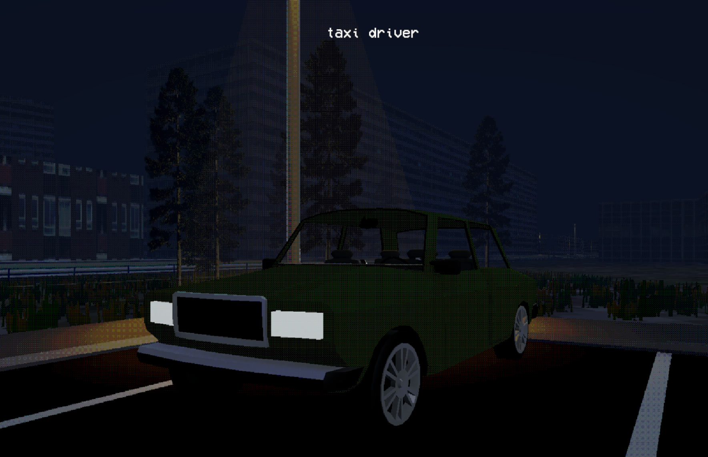
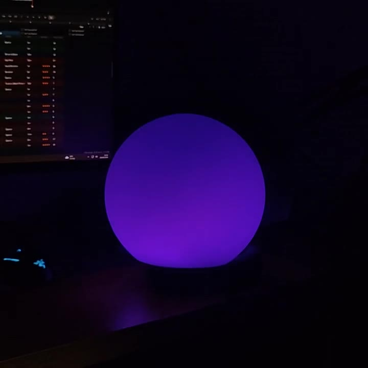
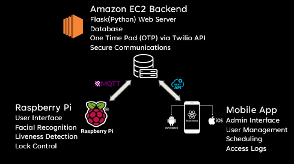

Benas Šiaudvytis
Electronics and software engineer. I build interactive things.
I studied Electronic and Computer Systems Engineering in London. I like making things that respond to people: a game where you talk to your passengers, an orb that reacts to music, and a door that recognises your face.
Projects

Taxi Driver
A PSX-styled driving game in Unity with a real drivetrain model, conversation-based gameplay and some funky GPS rerouting.

Music-reactive LED orb
An ESP32 that turns music into colour, fitted inside a pondering orb.

Facial recognition access control
Raspberry Pi face recognition with one-time passcodes and an admin app.